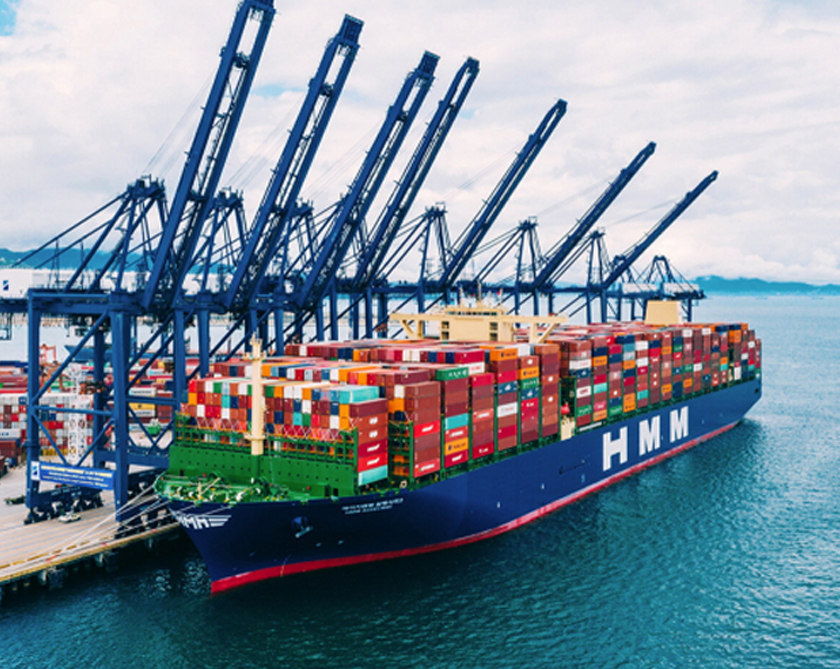
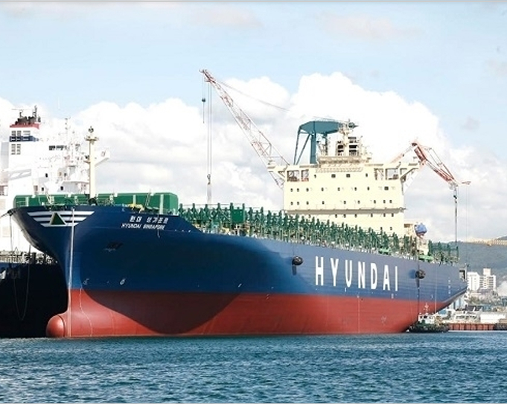
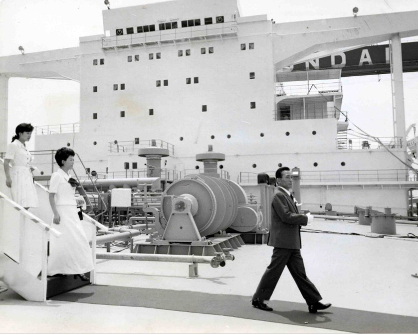

home > 회사소개 > 주요연혁
주요연혁
1976년 설립 이래 약 50년을 걸어온
HMM의 발자취를 소개합니다.
2010 ~ 현재
HMM으로의 새출발

-
- 2022
- 2026년까지 15조 투자’ 중장기 전략 발표
- ISO 45001 안전보건경영시스템 인증
- 온라인 예약 플랫폼 'Hi Quote' 론칭
- 김경배 대표이사 선임
-
- 2021
- 초대형 유조선(VLCC) 3척, 10년 장기 운송계약 체결
- 13,000TEU급 초대형 컨테이너선 12척 신조 발주
- 중소벤처기업부로부터 수출물류지원 감사패 수령
- 한국發 극동~남미동안 신규항로 개설
-
- 2020
- 지속가능경영보고서 발간
- HMM으로 사명 변경
- THE Alliance 협력 개시
- 세계 최대 컨테이너 1호선 "HMM 알헤시라스"호 선적량 "세계 신기록"
-
- 2019
- 배재훈 대표이사 선임
- 신규 CI 선포
- 컨테이너선 운항 정시성 세계 1위 기록
- THE Alliance 정회원 가입
-
- 2018
- 부산신항 4부두 공동운영 기본합의서 체결
- 초대형 컨테이너선 20척 발주
- 정보보호 국제표준인증 ISO 27001 획득
- 아시아~북유럽 독자 컨선 항로 신설
-
- 2017
- 컨테이너 선박 운항 정시성 세계 1위 기록
- 한~중~러 신규항로 개설
- 국적선사 최초 블록체인 및 냉동 컨테이너 IoT 시험 운영
- VLCC 5척 건조계약 체결
-
- 2016
- 韓-캄보디아 첫 직항노선 취항
- 중국~한국~러시아 신규 컨선 항로 개설
- 유창근 사장 선임
- 스페인 '알헤시라스 터미널' 우선협상대상자 선정
-
- 2015
- 극동-남미 서안 컨테이너 서비스 신규 개설
- 현대부산신항만, '신항 생산성 우수터미널' 선정
- 한국수출입은행과 에코쉽 프로젝트 펀드 투자계약 체결
- 유럽 최대 항만 로테르담에 컨테이너 터미널 확
-
- 2014
- 현대 드림호(13,100TEU) 취항
- 이석동 대표이사 선임
- 인도 뭄바이, 글로벌 Documentation 센터 설립
- 미국 Target社로부터 ‘최우수 파트너선사’ 선정
- 해운업계 최초 '기후변화 대응 우수기업' 4년 연속 선정
-
- 2013
- 현대상선 모바일 앱(App) 서비스 개시
- 현대상선 부산신항, ‘최고의 터미널’ 2년 연속 수상
- 현대상선 WUT, 美 타코마항으로부터 '최고상' 수상
- Toys R Us社로부터 ‘2012년 최우수선사’ 선정
- G6 얼라이언스 서비스 미주서안 및 대서양 항로까지 확대
-
- 2012
- 日 Sony社로부터 '최우수 선사' 선정
- 제17회 바다의 날 금탑산업훈장 수상 – 이석희 사장
- 미국 Target社로부터 '올해의 최우수 물류기업' 상 수상
- 국내 최초 친환경 선박 인증서 획득 – Pacific Pride호
-
- 2011
- 김성만 부회장ㆍ이석희 사장 선임
- 美 컨테이너 전용 터미널 CUT 개장
- 미국 Target社로부터 '최우수 물류기업' 선정
- 국내 해운업계 최초 ‘녹색경영시스템 인증’ 수상
- 세계 최대 얼라이언스 G6 출범
1990 ~ 2010
현대상선으로의 발전

-
- 2010
- 국내 업계 최초 AEO 인증 AA등급 획득
- (주)동방, 현대로지엠과 합작법인 현대동방아틀라스(HD Atlas Co., Ltd.) 설립
- 스마트폰 전용 모바일 홈페이지‘HMM SMART (m.hmm21.com)’서비스 개시
- 현대로지엠, SK에너지와 합작법인‘내트럭프랜즈(주)’설립
-
- 2009
- 국내 최초 AEO(Authorised Economic Operator) 인증 획득
- 베트남-미주 직항노선 개설
- 美 타코마 컨테이너 전용터미널 WUT 개장 10주년 기념행사 개최
- 함부르크-부다페스트 간 '다뉴브 컨테이너 전용열차 서비스' 개시
-
- 2008
- 김성만 사장 취임
- 국내 최대 8,600 TEU급 컨테이너선 '현대 브레이브' 호 인수
- 러시아, 두바이, 호주, 오스트리아 법인 설립
-
- 2007
- 소니(SONY)사로부터 4년 연속 ‘최우수 선사’로 선정
- 이탈리아 ,베트남 법인 설립
- 미국 물류 전문지(로지스틱스 매니지먼트)로부터 7년 연속 우수 선사로 선정
- 현대하이웨이'호 PSC 우수선박으로 선정
-
- 2006
- 폴란드 바르샤바 사무소 개설
- 미국의 유통업체인 타깃(Target)사로부터 ‘올해의 최우수 물류기업’상 수상
- 소니(SONY)사로부터 3년 연속 ‘최우수 선사’로 선정
-
- 2005
- 국내 최초 8,600TEU급 4척, 4,700TEU 5척 등 9척 동시 발주
- 일본 소니社 글로벌 파트너 선사(Global partnership Carrier) 2년 연속 선정
- 「베스트바이(Best Buy)」社 선정 4년 연속 최우수 선사상 수상
- 세계 양대 얼라이언스 그룹 (Grand Alliance) 전격 제
-
- 2004
- PCX 서비스 개시 / CUTㆍWUT, PMA 'Safety Award' 수상
- 현대그룹 비전 선포식 개최
- 2010년 매출 20조원 달성으로 재계 10위권 진입
-
- 2003
- 동서남아지역본부 설립
- 업계 최초 선박 통신시스템 자체 개발
- 해외 첫 건조선박 '현대 글로리호' 명명식
-
- 2002
- FESCO社와 공동으로 극동-호주지역 항로 개설
- 업계최초로 인터넷 역경매를 통한 자재구매 시스템 구축
- Tetra Laval社로부터 최우수 환경기업 'Green Supplier'로 선정
- 아시아-북미간 신규항로(PSV) 개설 / 자동차운송사업부문 매각협상 최종 타결
-
- 2001
- 인터넷 고객지원센터(Cyber Customer Service Center)구축
- 해외 주요 선사와 합작으로 해운포털사이트 'GT Nexus'구축
- 종합해운정보 사이트 '아이러브쉬핑(iloveshipping.com)'구축
- 장철순 신임사장 선임
-
- 2000
- 금강산에서 21세기 비전 'HMM 21' 선포
- 제5회 바다의날, 금탑산업훈장 수상-김충식 사장
- 프랑스 현지법인 설립
-
- 1999
- 롱비치 컨테이너 터미널 100% 자영화
- 미국 타코마항 컨테이너 전용터미널 개장
- 부산 현대 컨테이너 터미널 개장
- 터미널부문 ISO 9002/ISO 14001 인증 획득
-
- 1998
- TAPL, MOL 과 컨테이너 신서비스 TNWA그룹 출범
- 부산 감만 컨테이너 터미널 개장
- 광양항 컨테이너 전용터미널 개장
-
- 1997
- 제2회 바다의 날, 금탑산업훈장 수상
- 태국현지법인 설립
- 냉동ㆍ냉장화물 수송용 전용열차(의왕-부산) 투입
- '현대 아틀라스호' 국내 첫 Green Ship 선정
-
- 1996
- 대만 카오슝 전용 컨테이너 터미널 개장
- 제1 회 바다의날 대통령 단체 표창상, 석탑산업훈장(신용호 선장),
- 국제 환경표준 ISO 14001 인증 획득
-
- 1995
- 서울-LA간 국제 화상회의 시스템 개통
- 중국현지법인 現代商船(中國)有限公司 설립
-
- 1994
- 국내 최초 LNG선 '현대 유토피아'호 운항 개시
- 브라질 상파울루 지점 개설
-
- 1993
- 주지역 컨테이너 영업 총본부 HASA 및 HASA(P.N.) 설립
- ISO 9002 인증과 ISM 코드 동시 취득
-
- 1992
- 아시아-유럽간 자동차 수송 서비스 개시
- 구주,홍콩 현지법인 설립
-
- 1991
- 내 최초 부산-보스토치니간 한-소 직항로 개설
1976 ~ 1990
아세아상선으로의 도약

-
- 1990
- 일본 현지법인 설립
- 선박종합관리시스템 개시
-
- 1988
- 고려해운(주) 흡수합병
- 롱비치-시카고-뉴욕간 컨테이너 2단적 열차(DST) 운항 개시
- 컨테이너 국내영업 총괄대리점 아세아상선(주) 설립
-
- 1987
- 자본금 1,095억원으로 증자
- 6척의 PCTC 인수
-
- 1986
- 유럽-남태평양-호주 삼국간 세미컨테이너선 서비스 개시
- 석탄전용선 ‘현대 아일랜드’호 국내 최초 건조 및 취항
- 서울과 LA간 온라인 시스템 구축
-
- 1985
- 풀컨테이너선 운영 개시(아시아-북미항로)
- 동해상선(주), 신한해운(주) 흡수합병
-
- 1984
- 해운합리화 계획에 따라 '현대상선 그룹' 결성
- 동해상선, 신한해운 선박 수탁운항, 선일상선 계열화
-
- 1983
- 아세아 상선에서 현대상선으로 변경
- 캐나다-미주서안-호주간 정기항로 개설
-
- 1982
- 미주 정기항로 개설
- 미주 현지법인 '아세아상선 아메리카' 설립
- 극동-미주서안, 걸프-미주동안간 재래정기선 서비스 개시
-
- 1981
- 국내 최초 광탄 전용선 '현대 퍼시픽'호 취항
- '현대 퍼시픽'호(12만 5,000DWT)의 구입으로 광탄선 서비스 개시
- 뉴욕사무소 개설
-
- 1980
- 중남미 정기항로 개설
- 국내 최초 자동차 전용선 '현대1호' 취항
- 정기선영업부, 중동 홍해 정기선 항로 개설
-
- 1979
- 동경지점, 인천사무소 개설
-
- 1978
- 극동-중동간 재래정기선 서비스 개시
-
- 1977
- 벌크선 부정기영업 개시
- 현대건설의 주베일 산업항 공사용 자켓ㆍ모듈 운송
-
- 1976
- 亞世亞商船(株) 설립(3월 25일)
- 초대형 유조선(VLCC) 3척 운항개시